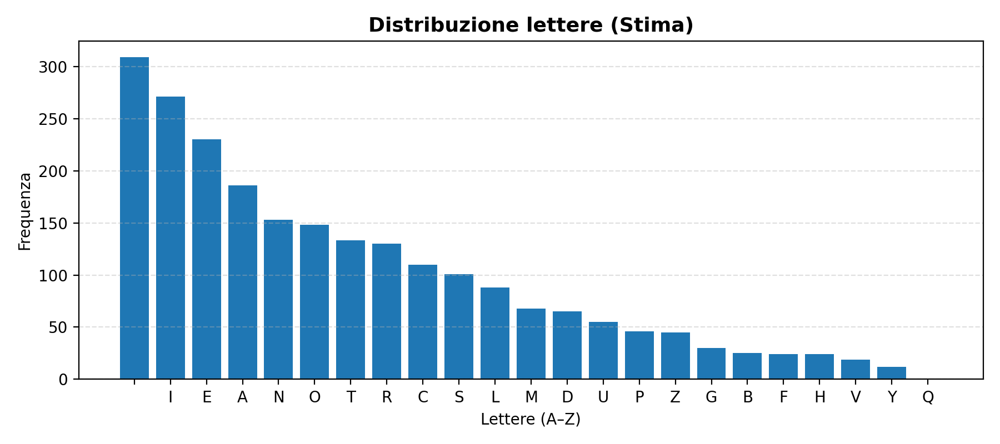

This experiment shows that applying RSA to single letters (without padding or block processing) effectively creates a
deterministic monoalphabetic substitution.
The frequency profile of the letters is not randomized but merely relabeled, so an attacker can exploit recurring patterns to estimate the original plaintext.
Key idea: statistics still leak through when probabilistic padding (e.g. OAEP) or hybrid encryption schemes (RSA + AES) are not used.
2) RSA — basic mechanism (updated)
Two prime numbers p and q are chosen, giving n = p·q and φ = (p−1)(q−1).
A public exponent e is selected so that gcd(e, φ)=1, and the private exponent d is computed with
d ≡ e⁻¹ (mod φ).
In the updated script each character of the normalized alphabet is mapped to an integer:
A→0, B→1, …, Z→25, (space)→26.
Encryption is performed per-letter as c ≡ mᵉ mod n and decryption as m ≡ cᵈ mod n.
Because we encrypt single characters deterministically and map residues to a fixed alphabet (now 27 symbols — A–Z plus space),
RSA acts as a fixed 1:1 permutation of the alphabet: frequencies are preserved and only relabeled.
Default parameters used by the updated script: p = 101, q = 113, e = 17. The script writes both the RSA-decrypted text (with the private key)
and the attacker guess obtained through frequency analysis / hill-climbing to the output/ folder.
3) Experimental model (updated)
Procedure
Normalize the input text to uppercase and collapse repeated spaces: allowed symbols are A–Z and space.
Represent each character as an integer in {0..26} where 26 is the space character.
Encrypt every character independently using RSA: c = m^e mod n with small didactic primes (defaults shown above).
The ciphertext is an array of integer residues; because the exponentiation is deterministic, there is a 1:1 mapping (permutation) between alphabet symbols and residues.
We build frequency tables from the plaintext and from the ciphertext and attempt to align them to recover the plaintext (frequency ranking + hill-climb using a bigram model).
The script intentionally keeps parameters small and simple to make the 1:1 nature of the mapping visually and numerically obvious.
The output files are written to rsa/output/ (see section «Files»).
4) Frequency distributions (plots)
Charts are generated from the CSV files: source_freq.csv, cipher_freq.csv, and guess_freq.csv
stored in rsa/output/.
Plaintext — normalized letter frequency (A–Z and space).

Estimated plaintext from frequency analysis (after rank-matching and hill-climb refinement).
5) Frequency attack (updated)
The updated attack proceeds in two phases:
Frequency mapping: count how many times each ciphertext residue appears, and align residues (most frequent → most frequent) with the plaintext letter ranking obtained from the source sample. In this didactic version the attacker is allowed to use the plaintext frequency ranking as a guiding prior (this demonstrates the vulnerability when frequency information is preserved).
Hill-climbing refinement: the initial mapping is refined using a simple bigram language model built from the same plaintext sample. The algorithm tries pairwise swaps of mapping assignments and keeps swaps that improve the bigram log-score.
The script writes the attack guess in attack_guess_from_source.txt. For comparison, the exact decryption with the private key is written to decrypted.txt.
Educational remark: in a realistic attack the attacker would use a general language model (e.g., trained on large corpora) rather than the exact plaintext frequencies;
here we keep the demonstration controlled so the effect of preserved frequency is explicit.
Example (extract)
Cipher (numeric residues):
4621 893 4621 ...
Attack guess (rank + hill-climb):
THIS IS AN EXAMPLE ...
Private-key decryption (ground truth):
THIS IS AN EXAMPLE ...
Files with the actual data are in rsa/output/ after running the script.
6) Why statistics matter in cybersecurity
If the encryption system is deterministic and operates on small units (letters),
patterns and repetitions can still leak through.
With larger samples, the statistical estimation becomes more accurate (law of large numbers).
Using probabilistic padding such as OAEP breaks the deterministic link between plaintext and ciphertext,
effectively hiding frequency information.
7) Reproducibility (tools and commands)
The Node.js script generates the ciphertext, frequency CSVs and the decoded results; a small Python script produces the plots.
Example Node command (updated)
node rsa_attack_with_output.js "Il testo che vuoi testare qui"
This will create (inside the working directory) a folder output/ with:
ciphertext.txt — the ciphertext residues (space-separated)
decrypted.txt — decryption using the private key (ground truth)
attack_guess_from_source.txt — recovered plaintext from the frequency attack + hill-climb
mapping.txt — final mapping used by the attack (cipherSymbol -> letter)
source_freq.csv, cipher_freq.csv, guess_freq.csv — frequency tables
Python plotting script (save as rsa/output/make_plots.py)
#!/usr/bin/env python3
import pandas as pd
import matplotlib.pyplot as plt
from pathlib import Path
OUT = Path(\"rsa/output\")
JOBS = [
(\"source_freq.csv\", \"source_freq.png\", \"Plaintext — frequencies\"),
(\"cipher_freq.csv\", \"cipher_freq.png\", \"Ciphertext — frequencies\"),
(\"guess_freq.csv\", \"guess_freq.png\", \"Estimated — frequencies\"),
]
def plot(csv_name, png_name, title):
p = OUT / csv_name
if not p.exists():
print(f\"[skip] {csv_name} not found\")
return
df = pd.read_csv(p)
letters = df[\"letter\"].tolist()
freqs = df[\"freq\"].tolist()
plt.figure(figsize=(10, 4.2))
plt.bar(letters, freqs)
plt.title(title)
plt.xlabel(\"Letter\")
plt.ylabel(\"Frequency\")
plt.tight_layout()
plt.savefig(OUT / png_name, dpi=160)
plt.close()
if __name__ == \"__main__\":
OUT.mkdir(parents=True, exist_ok=True)
for csv_name, png_name, title in JOBS:
plot(csv_name, png_name, title)
print(\"Plots saved in rsa/output/\")
Run locally with pip install pandas matplotlib and then python rsa/output/make_plots.py.